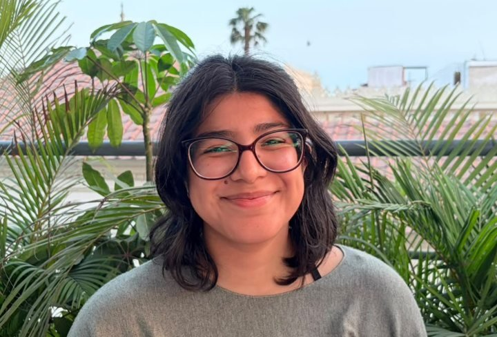
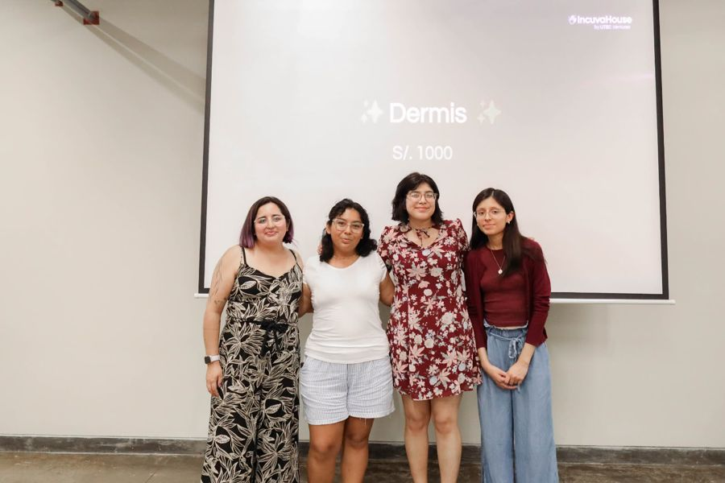
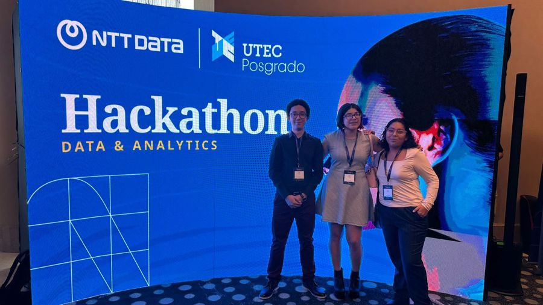
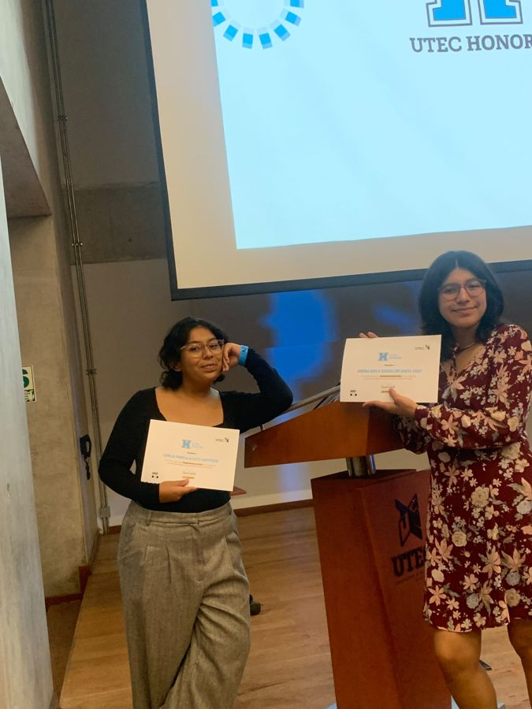
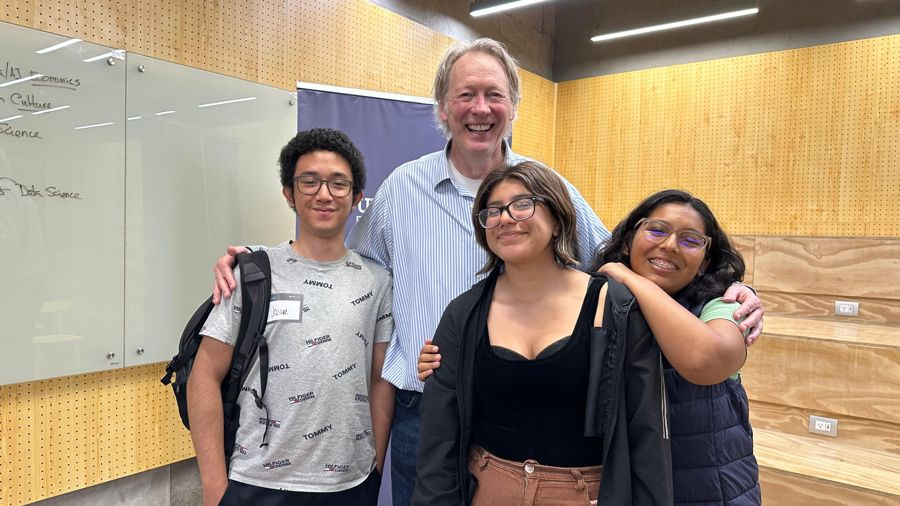
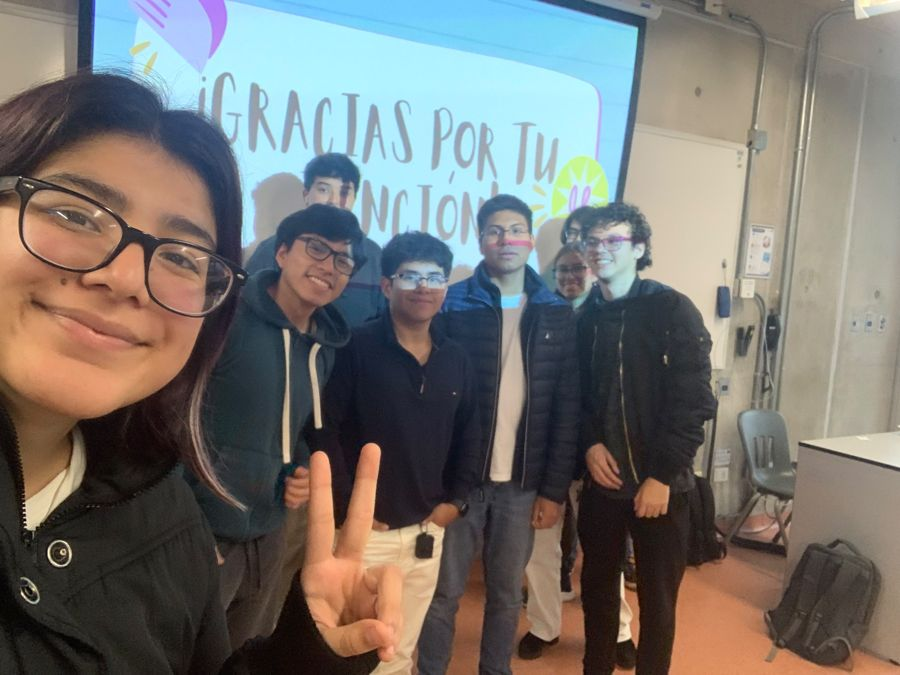

GINIA · 2024–
Graphs & geospatial data
Spatio-temporal GNNs and Transformers to analyze urban crime in Lima and São Paulo, on graphs built from geographic distances.
GNNGeoPandasOpenStreetMap

Data Science · UTEC · Lima, Peru
I combine data science, graphs and nonlinear dynamics to understand complex systems, with insatiable curiosity.
Hi, I’m Jimena, a Data Science student at the University of Engineering and Technology (UTEC), in love with physics and mathematics. I like looking at the world through as many scientific lenses as I can.
I work with graph neural networks on geospatial urban-crime data at GINIA, and with renormalization methods for nonlinear oscillators at El Popular. Last term I focused on processing and visualizing EEG signals.
I want to do research. If you work with undergraduates and any of this rings a bell, write to me.
“The more I study, the more insatiable do I feel my genius for it to be.”Ada Lovelace, 1843
I’m from Lima. This is the Peru I know, the Peru I still have to see and, beyond it, the places where I’d love to do research. Hover over a region; drag to pan and use Ctrl + scroll to zoom.
Click the legend to filter. Idioms: categorical choropleth + dot map, with semantic zoom Peru world (DS-5343, U2_T3).
I’m interested in how patterns emerge in complex systems and how to make them visible. These are the lines I work on. Every figure is alive: move it, change its parameters.
Spatio-temporal GNNs and Transformers to analyze urban crime in Lima and São Paulo, on graphs built from geographic distances.
Renormalization group for Van der Pol and Duffing oscillators: approximations closer to the exact solution than perturbation theory. Now, the coupled system.
I like models for the math behind them. Here, hidden activations separating by class as the network trains (in the style of Rauber et al., 2017). Now exploring vector databases and embedding indexing.
A D3 visual analytics system on individual vulnerability to sleep deprivation (OpenNeuro ds004902, 68 people with paired EEG). I built the topomap matrix, the data and the methods, with Andrea Coa and Paolo Medrano. Repository
Right now I’m deep into data visualization and vector databases, but also trees, graphs and geospatial models. Yes, it’s a lot. Drag the nodes; click a big node to pin its community and read its topics.
Which tools I used in which project, as a hierarchical edge bundling. Hover over a project or a tool.
What I’ve done since 2022, side by side. Bars are things that last; dots are moments. Hover for details.
I’ve been a teaching assistant for three courses and a peer mentor for first-year students. Click a course to expand or collapse its topics.
A few photos from awards, talks and mentoring.





I’m looking for undergraduate research opportunities and, later on, a PhD.
If your group works with graphs, geospatial data, nonlinear dynamics or visualization, I’d love to join as an assistant or intern.
My code is public and documented, and I like pairing results with interactive visualizations.
I want to do a PhD; Tsinghua, Peking University and ETH Zürich are high on my list.